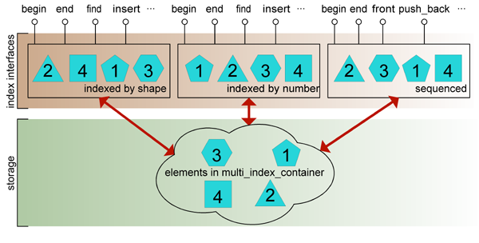

Boost.MultiIndex 教程Boost.MultiIndex 教程
Boost.MultiIndex 教程Boost.MultiIndex 教程STL 容器围绕这样一个概念设计: 每个容器控制自己的元素集合, 并以由容器类型所规定的方式提供访问: 例如, std::set 按指定的排序准则维护元素的顺序, std::list 允许元素沿线性序列自由定位, 诸如此类.
有时, 需要对同一底层集合提供不同的访问接口: 例如, 某些数据可能需要按多于一个比较谓词排序, 或者双向列表可能受益于补充的对数查找接口. 在这些情形下, 程序员通常求助于手工组合不同的容器, 这种解法一般需要编写大量代码来保持组合中各部分之间的同步. Boost.MultiIndex 允许规定 multi_index_container——由一个或多个 索引 构成——它们对同一元素集合提供不同的接口. 所得构造在概念上比手工组合更清晰, 且往往性能好得多. 一个重要的设计决策是: 给定 multi_index_container 实例化的索引在编译期规定, 这为静态类型检查与代码优化留出了充分的空间.
Boost.MultiIndex 的灵感来自关系数据库理论中出现的索引基本概念, 但它并不打算提供一个成熟完整的关系数据库框架. multi_index_container 无缝融入 STL 容器/算法设计, 并具有一些关于查找操作与元素更新的额外能力——即使是单索引容器, 这些也是有用的扩展.

multi_index_container 配有三个索引的图示.
上图描绘了一个由三个索引构成的 multi_index_container: 前两个分别对按 shape 与 id 排序的元素提供类集合接口, 而第三个索引以 std::list 的精神提供双向列表的功能. 这些索引充当内部元素集合的“视图”, 但它们不仅提供对集合的读访问: 插入/删除方法也得以实现, 与 std::set 或 std::list 的方法十分相似. 通过某一给定索引插入元素, 只有在满足所有索引的唯一性约束时才会成功.
Boost.MultiIndex 的所有公开类型都位于命名空间 ::boost::multi_index 中. 此外, 主类模板 multi_index_container 与全局函数 get 及 project 被提升到命名空间 ::boost, 采用的是 using 声明. 为叙述简洁, 文档中的代码片段写作时假定以下声明有效:
using namespace ::boost; using namespace ::boost::multi_index;
修订于 February 21st 2006
版权所有 © 2003-2006 Joaquín M López Muñoz. 按 Boost 软件许可 1.0 版 (Boost Software License, Version 1.0) 分发. (随附文件 LICENSE_1_0.txt 或复制于 http://www.boost.org/LICENSE_1_0.txt)